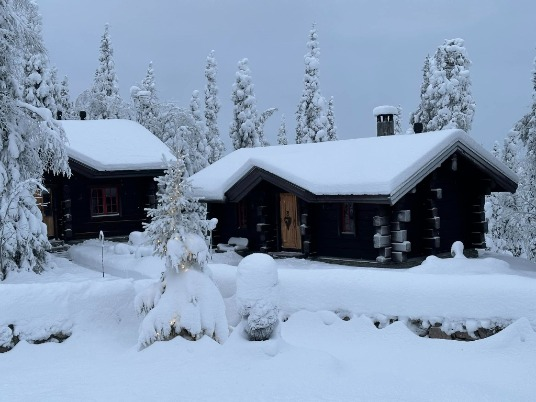
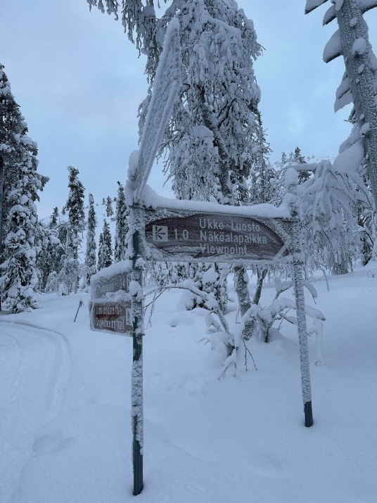
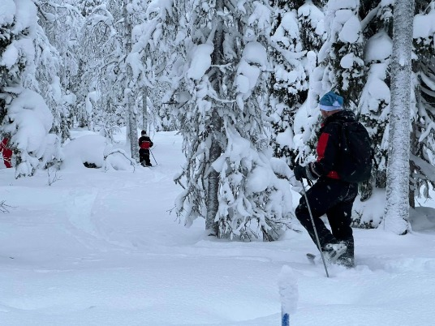
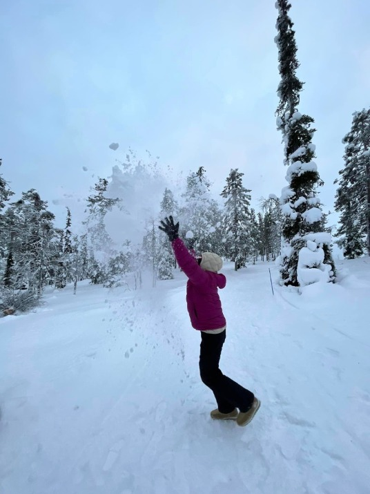

在Pyhä-Luosto 國家公園的森林漫步，遇見柳雷鳥。
柳雷鳥（lagopus）
夏季：雄鳥羽毛上半部分為黑褐色，下半部分為白色；翅膀為白色；黑褐色的尾巴中央有一對白色尾羽；腳上也覆蓋著白色羽毛。
雌鳥羽毛上半部分為黑褐色，羽端為白色；下半部分污黃色。
秋季：雄鳥和雌鳥上體的羽色都變成了棕黃栗色，布滿黑色的斑紋，胸、腹部換成了白色的羽毛。
進入冬季，雄鳥和雌鳥全身的羽毛都變為白色（僅尾羽和飛羽的羽干為黑色）。



